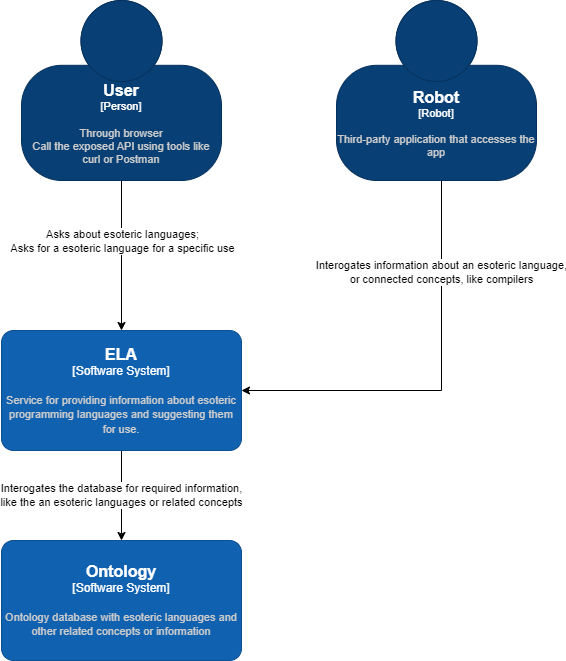
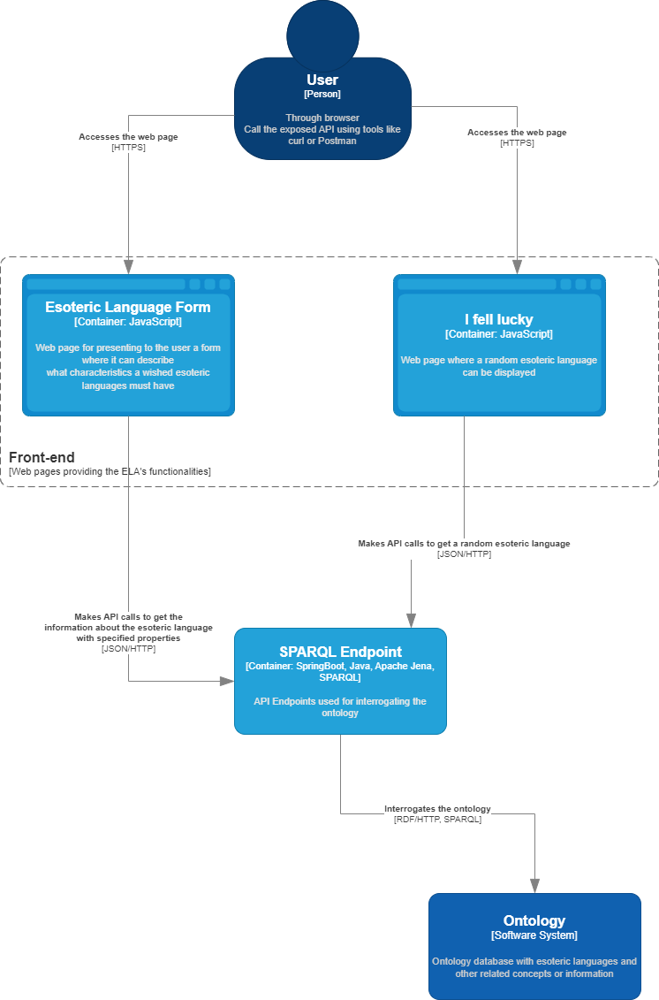
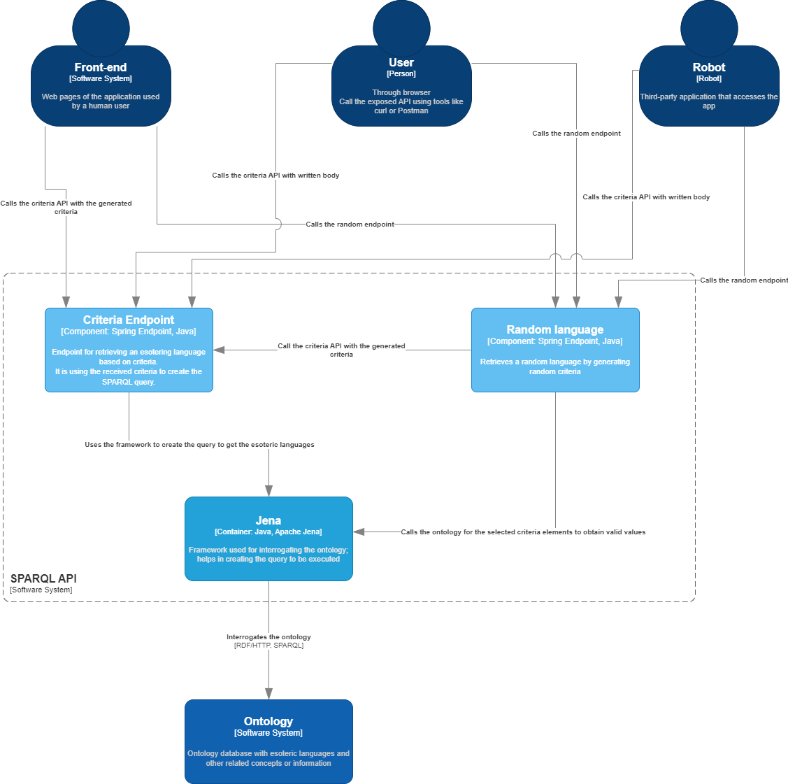
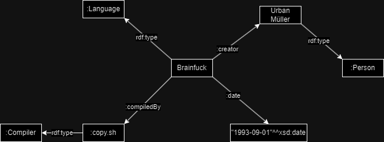
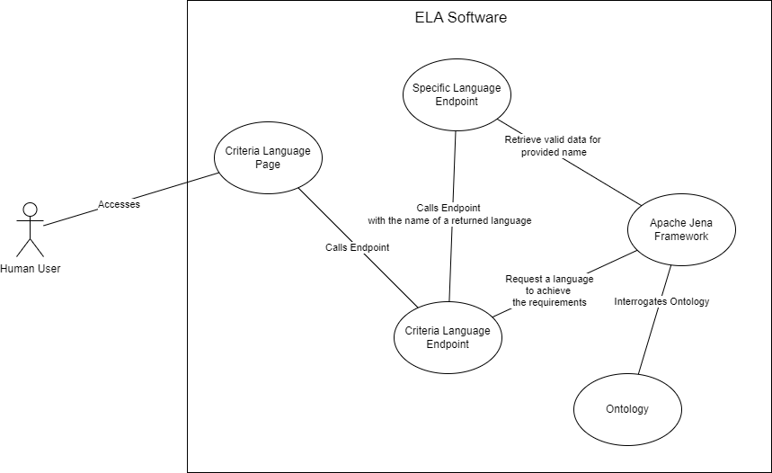
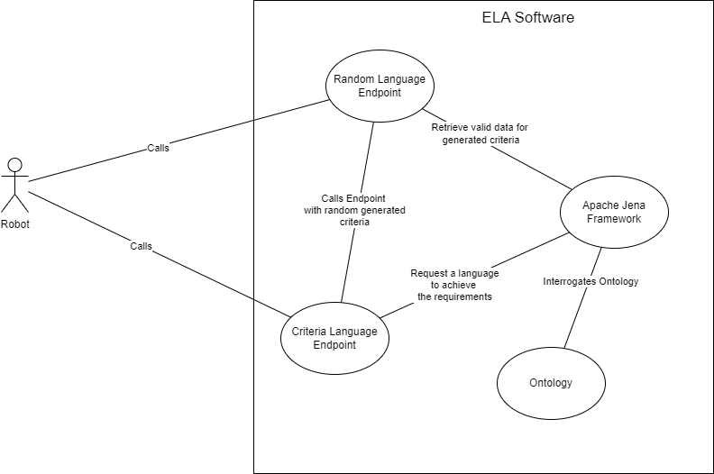

The ELA (Esoteric Language Explorer) application wants to give to anyone who thinks that has a uncommon way of thinking a challenge by providing all the possible information about esoteric programming languages.
The application consists of a 2-pages web interface and a public SPARQL API. The web pages are designed for the human users, and the API can be accessed by other applications.
One of the pages is for completing a form where the user can decide what criteria should be fulfilled by an esoteric language. For example, the user wants to know about difficult esoteric languages, or esoteric languages that are based on Brainfuck. The list of criteria is dynamic, this means that the user will be able to add/remove items from the criteria list that is sent to the application.
The other page is for interrogating the application for a random esoteric language. The page has a simple button that will send a request to the endpoint to return a random esoteric language.
The SPARQL component represents a public endpoint that can be accessed by anyone. This endpoints provides two functionalitites:
A generic view of the application is as followed:

The web pages will be implemented using HTML5, CSS and vanilla Javascripts.
Both pages will contain one thing in common, and that thing is a button/link that will redirect to the other we page.
The requests executed by both pages will be done using jQuery in an asynchronous way.
The page for getting a suggested esoteric language on criteria will have a dynamic form, with buttons to add specific criteria elements (elements used in the ontology) and remove those elements.
The random page will have, beside the button that redirects to the criteria page, a button to send a request to the application to receive a random esoteric language.
Once the response is received from the server, if the HTTP reponse code is success (200), then the page will render a new HTML element that will contain information about the retrieved esoteric language.
There can also be the scenarion when the application cannot find an esoteric language and an HTTP error code (404) is returned. In this scenarion, the UI will render a HTML element that will display the result of the search.
A visual explanation of the pages can be view in the following diagram:

The ELA-SPARQL will represents the main endpoint used by the whole application. This endpoint will be public to the world, this means that it can also be accessed by other means than using the web pages.
The following technologies are going to be used in the development of the web application:
The web application will provide two endpoints:
Note: By esoteric language, in the above list, it was referred to all linked information. To see what information is related to such a resource, see Ontology
This endpoint will receive an object will requested criteria to be processed. Using the selected criteria, the web application will build the SPARQL query using the Jena framework to execute it on the ontology. Here are 4 scenarios that must to be handled accordingly:
The random generation is done by selecting random criteria. After the elements of the criteria are selected, those are filled with information from the ontology. The information extracted from the ontology is limited.
For example, if the criteria is difficulty, then the application will extracted from the ontology the first 10 results for this criteria existent in the ontology, and then chosen a random one. In the ontology, this criteria can have the following values: easy, medium, hard, very_hard, unholy, why. A random value from this list can be why.
The return situations are similarly with Criteria Endpoint, with the exception that if no language is found, the criteria is re-generated and the query is executed again.
A visualisation of how the endpoints works together can be seen in the following image:

At the following link it is presented the OpenAPI specification of the SPARQL endpoint: API documentation
The ontology will be created as a base for the languages, their properties, and related concepts, such as compilers, editors, authors, notable application etc. These will be added as classes into the ontology with the aforementioned specific properties and relations.
Below is an example of an RDF graph for one of the esoteric languages:
To develop the ontology, the following tools are used:


In this section, it is motivated why out system follows the linked data principles.
A definition will be:
Every information provided about a concept will come along with specific metadata from the ontology and
the ontology will have references for the properties to other relevant ontologies.
Further details will be added as the solution will be developed.
The four rules:
1. Use URIs as names for things
2. Use HTTP URIs so that people can look up those names.
3. When someone looks up a URI, provide useful information, using the standards (RDF*, SPARQL)
4. Include links to other URIs. so that they can discover more things.
Our model follows those principles because:
Resources used in the processes of research, development and documentation: